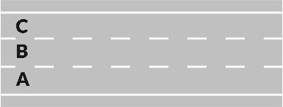
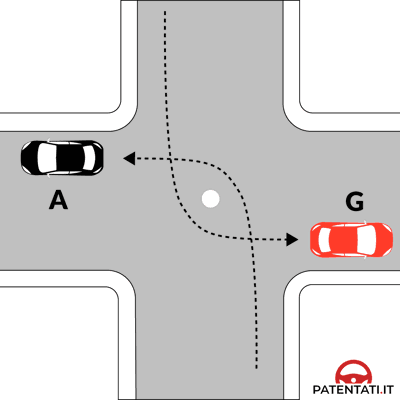

دليل وقاموس الباب الثالث عشر: قواعد حركة السير وتموضع المركبات
Norme di circolazione e posizione dei veicoli — الدليل التفاعلي الشامل لقواعد التموضع على الطريق، هندسة الانعطاف، الرجوع للخلف، فيزياء المرايا، والزوايا الميتة لمستوى A2-B1.
🚗 أولاً: تموضع المركبات والسير في صفوف متوازية (Posizione e File Parallele)
يحدد كود السير الإيطالي بدقة متناهية مكان تواجد المركبة على نهر الطريق (Carreggiata) وفقاً لعدد الحارات واتجاهات السير.
 Figura 502: حارتان باتجاهين
Figura 502: حارتان باتجاهين
قاعدة الحافة اليمنى الإلزامية (Margine Destro)
في الطرق ذات الاتجاهين والمقسمة لحارتين (Figura 502)، يجب السير دائماً في الحارة اليمنى بالقرب من الحافة اليمنى لنهر الطريق (Margine destro)، وتزداد هذه الصرامة عند المنحنيات (Curve) ومطبات الرؤية (Dossi). يُحظر السير في المنتصف حتى لو كان الطريق خالياً تماماً!

Figura 554: 3 حارات باتجاهينطريق بثلاث حارات واتجاهين (Corsia Centrale di Sorpasso)
في الطريق الموضح في (Figura 554): الحارة اليمنى لكل اتجاه مخصصة للسير العادي، أما الحارة الوسطى المشتركة فتُستخدم حصراً لـ التجاوز فقط لكلا الاتجاهين (Riservata al sorpasso). يُحظر السير العادي المستمر فيها قطعياً!
- 🔑 القاعدة الأساسية: السير بأقصى قرب ممكن من الحافة اليمنى (
Stringere il più possibile il margine destro). - 🏔️ المنحنيات والتلال: في المنحنيات ومطبات الرؤية يُلزم السائق بالتمسك التام باليمين لمنع الاصطدام بالمقابل.
- ⚠️ فخ: السير في منتصف الشارع بحجة أنه واسع خطأ كلياً ويعتبر Falso!
- 🛣️ نهران منفصلان (Figura 558): يسير كل اتجاه في نهره الخاص المخصص له.
- 🛣️ 3 أنهار سير (Figura 562): النهر الأوسط يكون عادة باتجاهين، والجانبيان باتجاه واحد.
- 3️⃣ 3 حارات لكل اتجاه (Figura 552): الحارة اليمنى للسير العادي، والوسطى واليسرى للتجاوز.
- 🚦 الحالتان الحصريتان للسير في صفوف متوازية (
Marcia per file parallele): - 1️⃣ الازدحام الشديد: (
Traffico intenso) بتوجيه حركة السير في كافة الحارات. - 2️⃣ التقاطعات المنظمة: بإشارات ضوئية أو شرطي المرور.
- 🏍️ فخ خطير: حظر مرور الدراجات النارية بين خطوط السيارات في الازدحام!
↩️ ثانياً: هندسة الانعطاف وتغيير المسار (Svolte e Inversione di Marcia)
تخضع مناورات الانعطاف لقواعد هندسية صارمة لتفادي قطع مسارات الآخرين أو التسبب في حوادث دهس.

Figura 599: الانعطاف يساراًالانعطاف لليسار في طريق باتجاهين (Svolta a Sinistra)
عند الانعطاف يساراً في طريق باتجاهين (Figura 599 و 601 و 602):
1. الاقتراب من خط منتصف الطريق (Asse della carreggiata) دون اجتيازه.
2. ترك مركز التقاطع على يمينك (Lasciare il centro dell'incrocio alla propria destra).
3. إعطاء الأسبقية للقادمين من الاتجاه المقابل المعاكس قبل إتمام الدوران.
- ➡️ التموضع: الالتزام التام بأقصى الحافة اليمنى (
Margine destro) قبل وأثناء الانعطاف. - 👀 الانتباه للدراجات والمشاة: فحص المرايا والتأكد من خلو المسار الأيمن من أي مشاة أو دراجات.
- 🔔 الغماز: تشغيل مؤشر الاتجاه الأيمن بوقت كافٍ قبل بدء التباطؤ والانعطاف.
- ⬅️ التموضع: الانتقال لأقصى الحافة اليسرى تماماً (
Margine sinistro). - ⚠️ فخ كويز متكرر: في طريق الاتجاه الواحد لا نأخذ خط المنتصف بل نلتصق بأقصى الحافة اليسرى!
- 🔔 السبب القانوني: لعدم وجود مركبات مقابلة، ولإفساح الحارة اليمنى لمن يرغب بالاستمرار للأمام.
- ↔️ الخط المتقطع: يسمح بالانتقال بين حارات التوجيه قبل التقاطع بحذر مع تشغيل الغماز.
- 🚫 الخط المتصل: بمجرد بدء الخط المتصل يُحظر قطعياً تغيير الحارة ويجب الالتزام بالاتجاه المحدد.
- ⚠️ فخ: سؤال يزعم جواز تغيير الحارة عند الخط المتصل بالتقاطع إذا كان فارغاً ← Falso!
🚫 مصفوفة الحالات الست لحظر الدوران للخلف (Inversione di marcia)
يُحظر الدوران الكامل للخلف (U-turn) قطعياً وبشكل مشدد في الحالات الست التالية (10 أسئلة وزارية):
🔙 ثالثاً: مناورة الرجوع للخلف الآمن (Retromarcia — 17 سؤالاً وزارياً)
تعتبر مناورة الرجوع للخلف من أكثر المناورات خطورة بسبب محدودية الرؤية، وتظهر بكثافة عبر المخطط الوزاري الرسمي 676.
 Figura 676: رجوع المركبة S للخلف
Figura 676: رجوع المركبة S للخلف
واجبات السائق عند الرجوع للخلف (Manovra di Retromarcia)
في المخطط (Figura 676)، المركبة S التي تتحرك للخلف للاندماج في السير عليها الالتزامات القانونية التالية:
✅ إعطاء الأسبقية لجميع المركبات القادمة من اليمين واليسار.
✅ الانتباه الشديد لـ المشاة العابرين خلف السيارة وإعطاؤهم الأسبقية.
✅ تشغيل مؤشر الاتجاه (الغماز) فقط.
✅ الاستعانة بـ شخص خارج السيارة (Farsi aiutare da persona a terra) عند ضعف الرؤية.
- أضواء الطوارئ (4 Frecce): زعم وجوب تشغيل أضواء الطوارئ الأربعة أثناء الرجوع للخلف ← FALSO (الغماز فقط).
- أضواء الضباب (Luce posteriore nebbia): زعم تشغيل ضوء الضباب الخلفي أثناء المناورة ← FALSO.
- أسبقية مقيدة (Solo nel senso di marcia): زعم إعطاء الأسبقية فقط للمركبات التي في نفس اتجاه السير ← FALSO (للجميع من اليمين واليسار).
- السرعة في الإخلاء: زعم وجوب الرجوع بسرعة لإخلاء مكان الركن ← FALSO (المناورة تتم ببطء شديد وبحذر).
- الكلاكس المتكرر: زعم وجوب الضغط المتكرر على المنبه الصوتي أثناء الرجوع ← FALSO.
🪞 رابعاً: فيزياء المرايا العاكسة والزوايا الميتة (Specchi e Angoli Ciechi — 41 سؤالاً)
المرايا تشكل أكبر كتلة أسئلة في هذا الباب. إليك القواعد الفيزيائية والقانونية المعتمدة لضبطها واستخدامها:
- 🔍 عدم الإلغاء الكامل: المرايا لا تلغي الزوايا الميتة كلياً (
Non eliminano completamente gli angoli ciechi) — قاعدة ذهبية! - 👀 الالتفات بالرأس: السائق ملزم بإدارة رأسه والنظر المباشر للتأكد قبل تغيير الحارة أو الانعطاف.
- 🚗 المناطق المحجوبة: بجوار القوائم الخلفية للسيارة وعلى الجانبين في مستوى الكتف.
- 🔎 الأبعاد الخادعة: المرآة المحدبة تظهر الأجسام أصغر وأبعد مما هي عليه في الواقع (
Più piccoli e più lontani). - 📐 مجال رؤية أوسع: توفر زاوية رؤية بانورامية أوسع، لكن تقدير المسافة يتطلب حذراً.
- ⚠️ فخ: زعم أن المرآة المحدبة تقرب الأجسام وتجعلها تبدو أقرب ← FALSO (بل أبعد!).
- 🌙 المرآة المركزية الداخلية: مزودة بوضعية منع الإبهار الليلي (
Posizione antiriflesso). - 🔀 آلية العمل: تكسر شدة وهج مصابيح السيارات الخلفية دون حجب صورة ما يدور خلفك.
- ⚙️ ترتيب الضبط: يجب دائماً ضبط المقعد أولاً (
Regolare il sedile) ثم ضبط المرايا ثانياً!
🎪 خامساً: الحالات الاستثنائية (المواكب، الشاحنات، والدوار)
- 🚫 حظر قطع الموكب: يُحظر قطعياً اختراق أو شق أي موكب رسمي أو جنائزي (
Vietato tagliare un corteo). - 🔇 حظر الكلاكس: يُمنع استخدام المنبه الصوتي بجوار الموكب منعاً للإزعاج أو التشتيت.
- 🅿️ السلوك السليم: التوقف على الجانب الأيمن وانتظار مروره بالكامل، أو الانعطاف في شارع فرعي بديل.
- 🚛 الانحراف التمهيدي: تنحرف الشاحنات الكبيرة يساراً أولاً (
Allargarsi a sinistra) لتتمكن من الانعطاف يميناً في الشوارع الضيقة. - 🚫 خطر التجاوز من اليمين: يُحظر على السيارات الصغيرة محاولة التجاوز من اليمين عندما ترى الشاحنة تنحرف يساراً!
- 📐 العلة الهندسية: كبر المسافة بين المحاور الأمامية والخلفية يجعل ذيل المقطورة يضيق نحو الرصيف.
- 🔄 مع شاخصة إعطاء الأسبقية: عند وجود شاخصة
Dare precedenza، الأسبقية حصراً لمن بداخل الدوار. - ⚠️ بدون شواخص (الدوار القديم): تُطبق قاعدة اليمين الحر العادية (الأسبقية للقادم من خارج الدوار).
- 🔔 مؤشر الخروج: تشغيل الغماز الأيمن عند الاقتراب من المخرج الذي تنوي الخروج منه.
📖 سادساً: القاموس التقني المبوب ثنائي اللغة (Glossario A2-B1)
| المصطلح بالإيطالية | الترجمة بالعربية | السياق الامتحاني ومفتاح الحل |
|---|---|---|
| Margine destro | الحافة اليمنى لنهر الطريق | القاعدة العامة الإلزامية: السير بأقصى اليمين، خاصة في المنحنيات ومطبات الرؤية. |
| Asse della carreggiata | خط منتصف نهر الطريق | عند الانعطاف يساراً في طريق باتجاهين: اقترب من خط المنتصف دون تجاوزه. |
| Margine sinistro | الحافة اليسرى لنهر الطريق | تُستخدم للتموضع حصراً عند الانعطاف يساراً في طريق ذي اتجاه واحد (Senso unico). |
| Marcia per file parallele | السير في صفوف متوازية | مسموح به حصراً في حالتين: الازدحام الشديد، أو التقاطعات المنظمة بإشارات أو شرطي. |
| Manovra di retromarcia | مناورة الرجوع للخلف | أسبقية لجميع المركبات من اليمين واليسار وللمشاة، مع تشغيل الغماز فقط والاستعانة بمساعد عند اللزوم. |
| Inversione di marcia | الدوران الكامل للخلف (U-turn) | محظور في 6 حالات رئيسية: الاتجاه الواحد، المنحنيات، التقاطعات، الضباب، الخط المتصل، والأوتوستراد. |
| Specchio retrovisore convesso | المرآة العاكسة المحدبة | تظهر الأجسام أصغر وأبعد (Più lontani)، ولا تلغي الزوايا الميتة كلياً. |
| Posizione antiriflesso | وضعية منع الإبهار | في المرآة المركزية الداخلية لمنع إعماء السائق بأضواء السيارات الخلفية ليلاً. |
| Tagliare un corteo | قطع أو شق موكب رسمي | محظور قطعياً؛ ويُمنع استخدام المنبه الصوتي بجواره. |
| Allargarsi a sinistra | الانحراف نحو اليسار | تقوم به الشاحنات الطويلة قبل الانعطاف يميناً؛ ويُحظر تجاوزهما من اليمين. |
| Farsi aiutare da persona a terra | الاستعانة بمساعد خارج السيارة | واجب عند الرجوع للخلف إذا كانت الرؤية الخلفية غير كافية لضمان الأمان. |
⚡ سابعاً: بنك الفخاخ الوزارية المباشرة (15 سؤالاً حاسماً من الامتحانات الرسمية)
تم انتقاء أصعب 15 سؤالاً وزارياً من بنك الأسئلة الرسمي مع الترجمة البشرية الدقيقة والشرح القانوني المباشر: